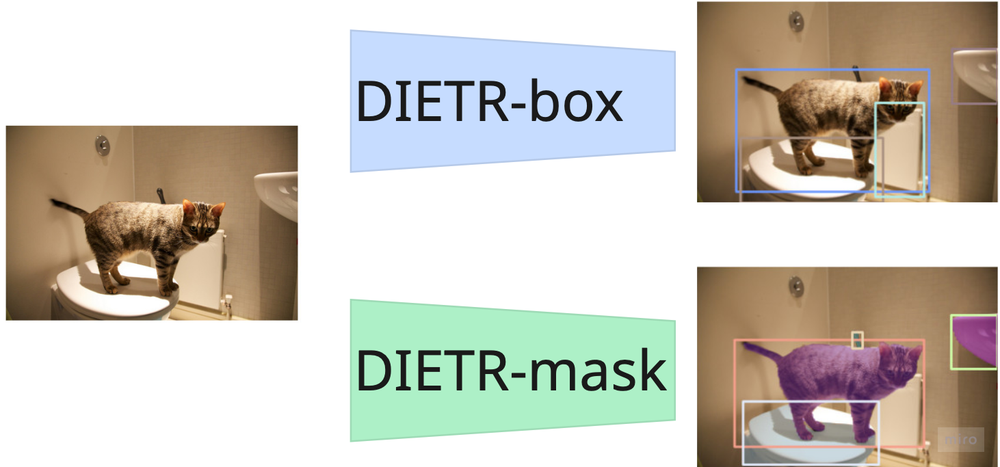

DIETR Detection and Instance sEgmentation TRansformers
computer vision
DIETR
instance segmentation
object detection
How to use the opensource isntance segmentation model.
 |
|---|
DIETR is a toolbox that contains code to to train, validate and use the DIETR model, which comes in an instance segmentation DIETR-msk or an object detection DIETR-box variant.
| Model | AP-0.95 - box | AP-0.95 - msk | Trainable parameters |
|---|---|---|---|
| DIETR-box | 0.421 | / | 38,425,780 |
| DIETR-msk | 0.416 | 0.356 | 41,816,244 |
DIETR-msk
from dietr import DIETR
conf_pth = "__config__/00-base-msk.yaml"
file_pth = "~/data/coco/images/val2017/000000479596.jpg"
model = DIETR(
conf_pth=conf_pth,
)
result_coco : list[dict] = model.predict_on_file(file_pth, plot=True)|
DIETR-box
from dietr import DIETR
conf_pth = "__config__/00-base-box.yaml"
file_pth = "~/data/coco/images/val2017/000000479596.jpg"
model = DIETR(
conf_pth=conf_pth,
)
result_coco : list[dict] = model.predict_on_file(file_pth, plot=True)|
Tuning
To fine-tune a model you need a dataset in coco format with the following and change the configurations like this, for example __config__/01-tune-msk.yaml
n_cls: #Classes
coco_dataset: False
coco_data_dir: "Path to your coco dataset"
trn_ann_file: "path to your annotations.json"
val_ann_file: "path to your annotations.json"
trn_img_root: "/train/"
val_img_root: "/valid/"
pre-trained-model: dietr-msk.ptuv run python \
src/dietr/trn.py \
__config__/02-base-msk-tune.yaml \
--device "cuda:0"Training
Training a model from scratch on the coco dataset:
uv run python \
src/dietr/trn.py \
__config__/02-base-msk-tune.yamlValidation
uv run python \
src/dietr/val.py \
__config__/01-base-msk-small-eval.yaml \
--ckpt dietr-msk.ptResults
100%|████████████████████████████████████████████████████████| 1250/1250 [07:01<00:00, 2.96it/s]
loading annotations into memory...
Done (t=0.27s)
creating index...
index created!
Loading and preparing results...
DONE (t=0.09s)
creating index...
index created!
Running per image evaluation...
Evaluate annotation type *bbox*
DONE (t=17.17s).
Accumulating evaluation results...
DONE (t=2.46s).
Average Precision (AP) @[ IoU=0.50:0.95 | area= all | maxDets=100 ] = 0.416
Average Precision (AP) @[ IoU=0.50 | area= all | maxDets=100 ] = 0.623
Average Precision (AP) @[ IoU=0.75 | area= all | maxDets=100 ] = 0.452
Average Precision (AP) @[ IoU=0.50:0.95 | area= small | maxDets=100 ] = 0.253
Average Precision (AP) @[ IoU=0.50:0.95 | area=medium | maxDets=100 ] = 0.454
Average Precision (AP) @[ IoU=0.50:0.95 | area= large | maxDets=100 ] = 0.556
Average Recall (AR) @[ IoU=0.50:0.95 | area= all | maxDets= 1 ] = 0.327
Average Recall (AR) @[ IoU=0.50:0.95 | area= all | maxDets= 10 ] = 0.541
Average Recall (AR) @[ IoU=0.50:0.95 | area= all | maxDets=100 ] = 0.589
Average Recall (AR) @[ IoU=0.50:0.95 | area= small | maxDets=100 ] = 0.414
Average Recall (AR) @[ IoU=0.50:0.95 | area=medium | maxDets=100 ] = 0.626
Average Recall (AR) @[ IoU=0.50:0.95 | area= large | maxDets=100 ] = 0.738
Running per image evaluation...
Evaluate annotation type *segm*
DONE (t=19.00s).
Accumulating evaluation results...
DONE (t=2.43s).
Average Precision (AP) @[ IoU=0.50:0.95 | area= all | maxDets=100 ] = 0.356
Average Precision (AP) @[ IoU=0.50 | area= all | maxDets=100 ] = 0.584
Average Precision (AP) @[ IoU=0.75 | area= all | maxDets=100 ] = 0.371
Average Precision (AP) @[ IoU=0.50:0.95 | area= small | maxDets=100 ] = 0.170
Average Precision (AP) @[ IoU=0.50:0.95 | area=medium | maxDets=100 ] = 0.396
Average Precision (AP) @[ IoU=0.50:0.95 | area= large | maxDets=100 ] = 0.517
Average Recall (AR) @[ IoU=0.50:0.95 | area= all | maxDets= 1 ] = 0.299
Average Recall (AR) @[ IoU=0.50:0.95 | area= all | maxDets= 10 ] = 0.462
Average Recall (AR) @[ IoU=0.50:0.95 | area= all | maxDets=100 ] = 0.491
Average Recall (AR) @[ IoU=0.50:0.95 | area= small | maxDets=100 ] = 0.286
Average Recall (AR) @[ IoU=0.50:0.95 | area=medium | maxDets=100 ] = 0.536
Average Recall (AR) @[ IoU=0.50:0.95 | area= large | maxDets=100 ] = 0.673Validation - box
uv run python \
src/dietr/val.py \
__config__/01-base-box-small-eval.yaml \
--ckpt dietr-box.ptFuther
This work was build upon RT-DETR (the head was based on their decoder), and the prototype network principle was based on the work of yoloact.